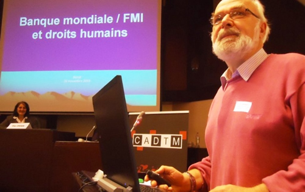

Real Chubut - Agencia de Noticias


“Macri necesita de ese crédito del FMI para seguir pagando la deuda”

Así avizora el futuro próximo el historiador belga Eric Toussaint, especialista internacional en deuda y portavoz del Comité por la Abolición de las Deudas Ilegítimas. El ciclo de endeudamiento, impronta repetida de la Argentina contemporánea. Los 50 mil millones del FMI superan el récord anterior de Grecia.
Luego de más de una década de “distanciamiento” oficial, el gobierno de Mauricio Macri acaba de golpear, nuevamente, a las puertas del Fondo Monetario Internacional (FMI). El crédito de 50 mil millones de dólares otorgado por el organismo la primera semana de junio constituye un récord internacional y tendrá repercusiones directas en la situación económico-social del país sudamericano. Así lo subraya el historiador belga Eric Toussaint (fotos 1 y 2), reconocido especialista en la materia y portavoz del Comité por la abolición de las deudas ilegítimas (CADTM), con sede en Bruselas.
AGENCIA PACO URONDO: ¿Por qué el gobierno argentino recurrió al FMI, sabiendo lo que las relaciones con este organismo internacional le han significado al país en su historia y sus consecuencias políticas nefastas? ¿Se podría pensar en una cierta desesperación de parte de la conducción económica del equipo Macri?
Eric Toussaint: La política implementada desde su asunción hasta ahora por el Gobierno de Mauricio Macri condujo a una situación crítica. Disminuyó los ingresos fiscales al reducir importantes impuestos a los exportadores; aumentó sensiblemente los gastos ligados al pago de la deuda –lo que significa un cien por ciento más en el 2018 con respecto al 2017. En consecuencia, al país le faltan dólares. Las reservas de divisas bajaron en ocho mil millones de dólares en los primeros meses del año en curso. Macri necesita de ese crédito del FMI para seguir pagando la deuda. Los prestamistas privados internacionales exigen ese crédito como condición para continuar prestando a la Argentina. Parte importante de lo que el FMI presta no está destinado a ser usado en Argentina, sino que va a ir del FMI al Banco Central y de este organismo directamente a esos prestamistas.
APU: Viendo la historia argentina de los noventa, sin embargo, es un mecanismo que significa jugar con fuego…
ET: Sí, seguramente. Pero quisiera evaluar un poco más el marco que determina la solicitud al FMI…
APU: Adelante…
ET: Expresa el fracaso total de la política del Gobierno. Con un peso aceleradamente devaluado; la tasa de interés dictada por el Banco Central de la República Argentina que llega al 40 por ciento; la reducción de ocho mil millones de dólares de las reservas internacionales y que no para de continuar en caer. Y con un servicio de la deuda que aumenta en un cien por ciento con respeto al 2017. Ante una fotografía de tal naturaleza, no hay duda que se trata de un fracaso total. Macri pretendía que pagando la deuda -hacia fines del 2015 e inicios del 2016-, compensando a los Fondos Buitres al aplicar la sentencia del juez Thomas Griesa, iba a asegurar un nivel de crecimiento alto y una deuda sostenible… Pero los hechos confirmaron que esta visión no le funcionó. Y fue creciendo en forma vertiginosa -llamativo por la velocidad del aumento- la deuda y la incapacidad de convencer a los acreedores que Argentina puede reembolsarla en el futuro. Y por eso pide este crédito al FMI de 50 mil millones de dólares ¡Hay que recordar que cuando Grecia, en el marco de una situación muy dramática, recibió 30 mil millones de dicho organismo en el 2010, se habló de récord!
APU: Algunos analistas afirman que con ese crédito el presidente Macri intenta tener oxígeno para llegar en una posición confortable a la elección de octubre del 2019…
ET: No quisiera a la distancia entrar en especulaciones. Prefiero remitirme a los hechos. Leí el contenido del Acuerdo suscrito con el FMI y está aceptada la reducción muy fuerte a nivel de gastos sociales, de salarios y de inversiones públicas, lo que va a desembocar en una depresión económica y una nueva reducción de los ingresos fiscales en consecuencia del declive de la actividad económica y del consumo público y privado. Seguramente aumentará el IVA y otros impuestos indirectos que se imponen al pueblo. Pero esa reducción de la actividad económica va a conspirar contra el pago de la deuda. La política dictada por el FMI va a llevar al país a una crisis económica y social aún más aguda que la que se vivía antes de recibir este crédito. Volviendo a la pregunta: es muy probable que, políticamente, Macri, trate de argumentar que lo que está ejecutando no es su proyecto sino lo que le exige el FMI…
APU: Quisiera insistir con una reflexión que nos conduce a un pasado no muy lejano…La década de endeudamiento -y el rol del FMI- en los ’90, que finalmente lleva a la explosión social del 2001. ¿Se puede repetir la historia sin caer en una tragedia?
ET: Observamos una repetición de la historia en un país que es un pagador en serie de deuda. Que arranca incluso con la deuda ilegítima heredada de la dictadura militar de los ‘70. El sostén del FMI fue esencial para el mantenimiento de la misma. Y se continúa en los ‘90 con Menem y de la Rúa, dando pie a la gran crisis social de fines del 2001. Rodríguez Saá, en sus escasos días de presidente, anunció la suspensión de la deuda, y le resultó muy positivo a la economía y al pueblo argentino.
Desafortunadamente, siguió pagando al FMI y al BM, lo que hemos criticado desde el inicio. En 2005 se reestructuró la deuda y luego se negoció con los acreedores que no habían participado entonces. El gobierno argentino no quiso nunca –como sí lo implementó Ecuador en el 2007-2008- una auditoría con participación ciudadana que pudiera decidir sobre la parte odiosa e ilegítima de la deuda. Lo que creó frustraciones desde la perspectiva del discurso de soberanía nacional del kirchnerismo, e incluso explica, parcialmente, la victoria electoral de Macri en el 2015.
APU: Proceso de décadas en las que la deuda ilegítima condiciona políticas de gobierno sin lograrse nunca soluciones estructurales…
ET: Sí. Y que llega hoy a este crédito, que desde el vamos, se puede clasificar como fuente de deuda odiosa e ilegítima. Según el concepto de lo que es una deuda odiosa, es la que se contrae contra el interés del pueblo y cuando los acreedores sabían que la misma era ilegítima. Somos por lo tanto testigos de contratación de deuda ilegítima y odiosa.
APU: ¿Y las perspectivas en el horizonte?
ET: Ya hablé de la agudización de la crisis económica y social. Mi esperanza es que la reacción popular, en los meses que vienen, será muy fuerte y que no va a tardar mucho en lograrse una convergencia de energías de las fuerzas populares para oponerse aun con más fuerza al gobierno Macri y a las imposiciones del FMI y de los otros acreedores internacionales.
Fuente: APU